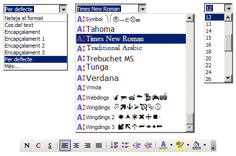
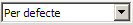
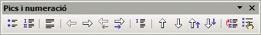
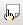
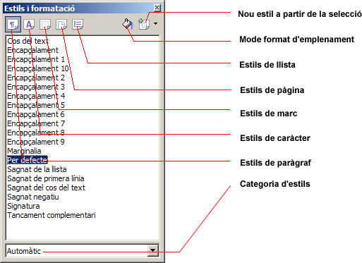

Els estils
Els estils permeten donar format al document segons una forma preestablerta a la plantilla o al mateix document. El LibreOffice Writer diferencia entre els estils de paràgraf, de caràcter, els de marc, els de pàgina i els estils de llista.
- Estils de paràgraf: Contenen les propietats de format del paràgraf: sagnat i espaiat, alineació, flux del text, tipus de lletra i les seves característiques, contorns, tabulació, inicials destacades i, finalment, les característiques del fons de paràgraf.
- Estils de caràcter: Contenen les propietats de format dels caràcters: tipus de lletra, efectes del tipus de lletra, posició i, finalment, característiques del fons de lletra.
- Estils de marc: Contenen les propietats de format dels marcs: tipus (quant a la mida i posició), opcions, ajustament pel que fa al text del document, fons del marc, característiques del contorn i, finalment, columnes del marc.
- Estils de pàgina: Contenen les característiques de disseny de les pàgines del document: format del paper i marges del document, característiques del fons de pàgina, capçalera i peu de pàgina, característiques dels contorns de la pàgina, columnes de la pàgina i, per últim, les característiques de les notes al peu.
- Estils de llista: Contenen les característiques de disseny per aplicar-les a les llistes numerades i les llistes amb pics: tipus de pics, estils de numeració, tipus d'esquema, gràfics, posició i espaiat en funció del nivell i, per últim, les opcions corresponents a cada nivell.
Aplicar estils
Els estils més comuns de paràgraf, de caràcter i de llistes, es poden aplicar fàcilment des de la barra d'eines Formatació. De fet, en mòduls anteriors, ja els heu fet servir per aplicar diferents característiques de format als textos de les pràctiques i als exercicis. Alguns estils es poden aplicar també amb determinades combinacions de tecles del teclat:
- Ctrl+1 aplica l'estil Encapçalament 1.
- Ctrl+2 aplica l'estil Encapçalament 2.
- Ctrl+3 aplica l'estil Encapçalament 3.
- Ctrl+0 (zero) aplica l'estil Per defecte.
L'opció de menú Eines | Personalitza… | Teclat permet assignar diferents combinacions de tecles a determinats estils de paràgraf, caràcter, etc.
- Activeu el LibreOffice Writer. El programa us haurà creat un full en blanc.
- Escriviu Pràctiques de format, desplegueu l'eina  Aplica l'estil i escolliu l'estil Encapçalament 1. Observeu el canvi quant al tipus de lletra, grandària, etc. que s'ha produït. L'estil s'ha aplicat al paràgraf i no ha calgut seleccionar cap part del paràgraf.
- Premeu Retorn per afegir un salt de línia. En fer-ho, observeu que l'estil actiu que apareix a l'eina Aplica l'estil és Cos del text.
- Escriviu, ara, Els estils de caràcter només afecten les característiques de la lletra. Feu doble clic amb el ratolí sobre la paraula caràcter per seleccionar-la.
- Utilitzeu les eines Nom del tipus de lletra, Mida de la lletra i Color de la lletra perquè sigui Arial Black de 24 punts i de color Verd 4. Com podeu observar, les característiques aplicades només afecten certes lletres del text. A més, ha calgut seleccionar part del text per aplicar els canvis d'estil de caràcter.
- Premeu la tecla Fin per situar-vos al final de la línia de text i premeu Retorn per inserir un salt de línia.
- Escriviu Primer element de llista numerada i, sense canviar de línia, activeu l'eina Numeració activada/desactivada. Observeu el canvi que s'ha produït al text i, també, que apareix la barra d'eines Pics i numeració que conté les eines que us permeten controlar les característiques en aquest tipus de llistes.
- Premeu la tecla Retorn per inserir un salt de línia i escriviu Segon element de la llista numerada.
- Sense canviar de línia, premeu l'eina Pics i activats/desactivats. Tant és que feu servir la de la barra d'eines Formatació com la que apareix a la barra d'eines Pics i numeració; el resultat serà el mateix.
- Afegiu dos salts de línia (premeu dues vegades la tecla Retorn). Així desactivareu l'estil de llista.
- No tanqueu el document, el fareu servir a la pràctica següent.
Més estils
Activant l'eina  Estils i formatació, l'opció Mes… de l'eina Aplica l'estil o prement la tecla F11, indistintament, es mostrarà la finestra Estils i formatació.  A la part inferior de la finestra Estils i formatació podem escollir la categoria de formats a mostrar. Per aplicar un estil des d'Estils i formatació seleccioneu l'element del document, seleccioneu el tipus d'estil a aplicar (de paràgraf, de caràcter, etc.) i feu doble clic sobre el nom de l'estil a aplicar. En el cas de paràgrafs només és necessari que el punt d'inserció d'escriptura estigui situat al paràgraf. Continueu amb la pràctica anterior i feu ús de la finestra Estils i formatació per assignar estils.
- Activeu l'eina Estils i formatació (o bé premeu la tecla F11). Observeu que la llista d'estils que hi apareix és la corresponent a la categoria Automàtic (si volguéssiu obtenir la llista sencera, hauríeu d'escollir la categoria Tots els estils).
- Feu clic en qualsevol indret del primer paràgraf. Observeu que l'estil Encapçalament 1 queda marcat per indicar que, aquest, és l'estil aplicat en aquest paràgraf.
- Feu doble clic sobre l'estil Encapçalament 2. Observeu el canvi que s'haurà produït al paràgraf.
- Apliqueu ara l'estil Encapçalament 10 i, tot seguit, l'estil Cos del text.
- Restabliu l'estil inicial fent doble clic sobre l'estil Encapçalament 1.
- Feu doble clic en la paraula característiques de la segona línia del document.
- Activeu l'eina Estils de caràcter de la finestra Estils i formatació.
- Feu doble clic sobre l'estil Exemple i observeu els canvis en la paraula. Proveu, també, amb els estils Èmfasi, Èmfasi fort i Enllaç d'Internet.
- Restabliu l'estil de caràcter aplicant l'estil Per defecte.
- Feu clic en la tercera línia del text.
- Activeu l'eina Estils de llista de la finestra Estils i formatació.
- Feu doble clic sobre l'estil Llista 3. Observeu-ne el canvi.
- Feu clic en la quarta línia del text.
- Assigneu l'estil Llista 5.
- Sortiu del LibreOffice Writer descartant desar el document.

|
|

|
|